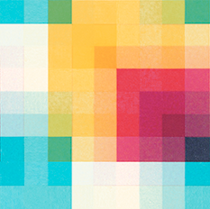

Помощь разработчику в подборе CSS параметров фонового цвета
COLORbox
Данный инструмент позволяет подобрать CSS параметры фонового цвета, включая
параметр прозрачности для разных типов фона. Особенности управления элементами
интерфейса описаны в окне подсказки ниже, которое активируется при наведении
курсора на соответствующую панель
Наведите курсор на элементы управления для получения подсказки

Исходный код можно посмотреть здесь
Copyright 2016, Oleg Pomazkov povcode@gmail.com  OlegVPomazkov
OlegVPomazkov
OlegVPomazkov